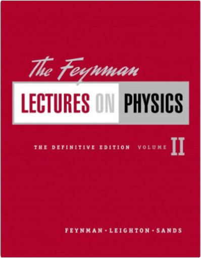
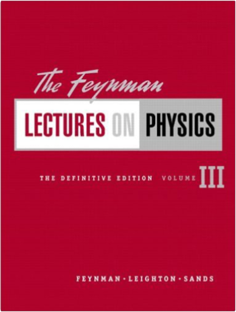

 The Feynman Lectures on Physics, The Definitive Edition Volume 2Richard P. Feynman, Robert B. Leighton, Matthew Sands  This revised edition of Feynman’s legendary lectures includes extensive corrections Feynman and his colleagues received and Caltech approved, making this the definitive edition of The Feynman Lectures on Physics. For all readers interested in physics.  The Feynman Lectures on Physics, The Definitive Edition Volume 3Richard P. Feynman, Robert B. Leighton, Matthew Sands This revised edition of Feynman’s legendary lectures includes extensive corrections Feynman and his colleagues received and Caltech approved, making this the definitive edition of The Feynman Lectures on Physics. For all readers interested in physics.  This revised edition of Feynman’s legendary lectures includes extensive corrections Feynman and his colleagues received and Caltech approved, making this the definitive edition of The Feynman Lectures on Physics. For all readers interested in physics.  This new volume contains four previously unpublished lectures that Feynman gave to students preparing for exams. With characteristic flair, insight and humor, Feynman discusses topics students struggle with and offers valuable tips on solving physics problems. An illuminating memoir by Matthew Sands — who originally conceived The Feynman Lectures on Physics — gives a fascinating insight into the history of Feynman’s lecture series and the books that followed. This book is rounded off by relevant exercises and answers by R. B. Leighton and R. E. Vogt, originally developed to accompany the Lectures on Physics.  What really goes on inside a sentence? What is your subject, and where is your verb, and what is its tense, and where is your modifier, and why does it matter? Where do you need a comma, and where do you not? Why are dashes and semicolons so misunderstood? When is it which and when is it that? In The Little Green Grammar Book, Mark Tredinnick asks and answers the tough grammar questions—big and small—with the same verve and authority readers encountered in The Little Red Writing Book. The Little Green Grammar Book does for grammar what The Little Red Writing Book did for style. It will have you writing like a writer in no time.  Hardcover: 200 pages Publisher: Graphics Pr; 2nd edition (May 2001) Language: English ISBN-10: 0961392142 ISBN-13: 978-0961392147 Product Dimensions: 10.7 x 8.9 x 0.8 inches |

Doddridge Library
Collection Total:
417 Items
417 Items
Last Updated:
Apr 21, 2020
Apr 21, 2020
 Made with Delicious Library
Made with Delicious Library